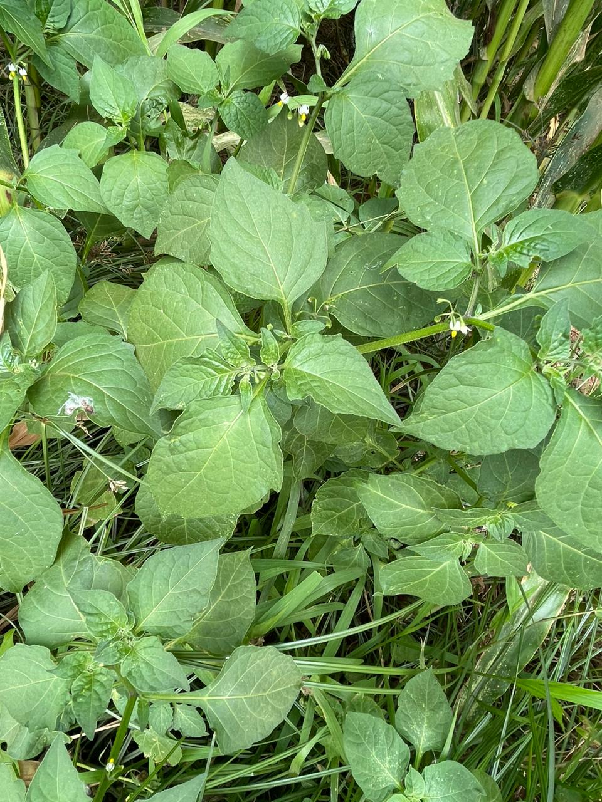

VIPLANT
MAUVAISES HERBRES
MONOCOTYLEDONES
& DICOTYLEDONES
& DICOTYLEDONES

MONOCOTYLEDONES
Sont des plantes indésirables de la classe des monocotylédones,
caractérisées par leurs feuilles étroites et leur système racinaire fibreux.
Elles nécessitant des méthodes de gestion spécifiques pour minimiser
leur impact sur les cultures désirées.
DICOTYLEDONES
Sont des plantes non désirées de la classe des dicotylédones,
reconnaissables par leurs feuilles larges et leur système racinaire
pivotant.Elles nécessitant des stratégies de contrôle adaptées pour
minimiser leur impact sur les récoltes cultivées.
Caracteristiques


EXEMPLE